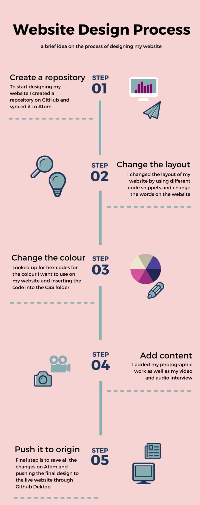

Web design
Jennie taught us about infographics and how we can implement it into our website. As the quota for photography is a minimum of three pictures and a maximum of five pictures, we are also able to include a couple of infographics into the quota. For instance, one infographic and four pictures. She mentioned the aspects that must be considered when creating an infographic such as making sure to simplify complex information and enhancing boring texts into illustrative visuals. She also mentioned how an infographic is all about storytelling. When creating an infographic, it must be about a topic people care about, displaying origin stories and timelines, and sharing tips and tricks on a specific topic. Before the session ended, she made us create one infographic on the website Canva, which is a graphic design website with multiple templates you can choose from to create the infographic. With this being said, I have attached one infographic I have made regarding web designing process.
Videography
This lesson, Lawrence taught us about the basics of video production. He covered about the framing aspects, how to edit the video on Adobe Premier Pro by showing us the shortcuts that we can use when it comes to editing and how to organise our recordings as well as to set up the video equipment. He then divided us into groups and made us set up the camera. After setting up the camera, we were asked to film a short video about a ball rolling. The five-sequence ball video was to demonstrate the basics of video production. This practice will be very useful for my actual videography work as I will know the basics when it comes to video production and I will be able to implement it onto my actual work.

User experience and filming 101
Web design
Christine talked about user experience and how important it is when it comes to designing a website. User testing, information architecture, proto-typing, wireframes, visual design, field research, product designs and data analysis are a few of the aspects that should be considered when creating a website. When creating or designing a website you should always put yourself in the target audience’s shoes and figure out if it is a good experience. This lesson is beneficial for my assignment as it helps me ensure that my website is a good experience to use. If my website does not meet the user’s standards, they will not go to my website. Similar to the accessibility and inclusivity aspects, user experience is also very important when it comes to designing a website thus making it important for me to implement all the key points in the lesson into my website.
Videography
For this lesson, Lawrence made us work in the groups we were in for the ball video to create a news package. Before making us film our own news package, we were taught the proper framing techniques such as the rule of thirds and making sure the interview and interviewee’s eye view is in the same position to ensure that the video will look synced. We were also told to record a few fillers such as noddies, which is when the interviewer nods, a shot of the location and a shot of the interviewee’s hand gestures or eyes. This is to make the video more interesting and captivating for the audience. After seeing a few examples, we were then asked to record our own video. By knowing the proper methods and techniques for video production, my team and I will be able to implement it during the filming of our interview.
Digital Wednesday
Web design
For the digital Wednesday, we were asked upload an audio recording regarding our personal update for our website. In the audio, I talked about how I have changed the layout of my website as well as including a few images from my photography session and changed the colours on my website. This activity is also a way for me to know my current progress regarding my website leading up to the submission date.
Photography
For the photography activity, we were just asked to work on our design log. By updating my design log, I will have a clear idea of what I am doing as well as making it easier for me to upload all the information onto my website.
Embedding audio and video
Web design
Christine showed us how to embed the audio interview as well as the video interview onto our website. The sources that we have to use to upload our content are YouTube, Vimeo and Soundcloud. We can use between the three for our content. She showed us that after uploading our interview to click the share button and copy the embedded link. After copying it, I went on Atom and pasted it at the desired location. The methods taught in this lesson will be very helpful especially since embedding the audio and video interview is an important part of my assignment.
Videography
For this session, we were asked to use the methods and techniques taught to us in the previous lesson to edit our ball video as well as the news package. This practice is helpful to ensure us that we know how to edit the interview properly and if there were any mistakes in editing, we were able to see it in the practice videos.
Audio Interview with Katie Barnes
Web design
We were asked to break out and work on the website. I added more photos and updated my design log. This will give the opportunity for me to update my design log for the website in time for the submission.
Audio
Lawrence showed us the current progress for each group to ensure that we are on track of all our work. My team and I also decided to interview Katie Barnes, UA92 External Affairs Assistance regarding the marketing strategies for UA92. We made sure that we implemented all the techniques shown to us when it came to an audio interview. The method that was taught by Lawrence was very helpful for our audio interview as it made it easier for us and after knowing how important file management is, we ensured that the work was backed up and put into files accordingly.